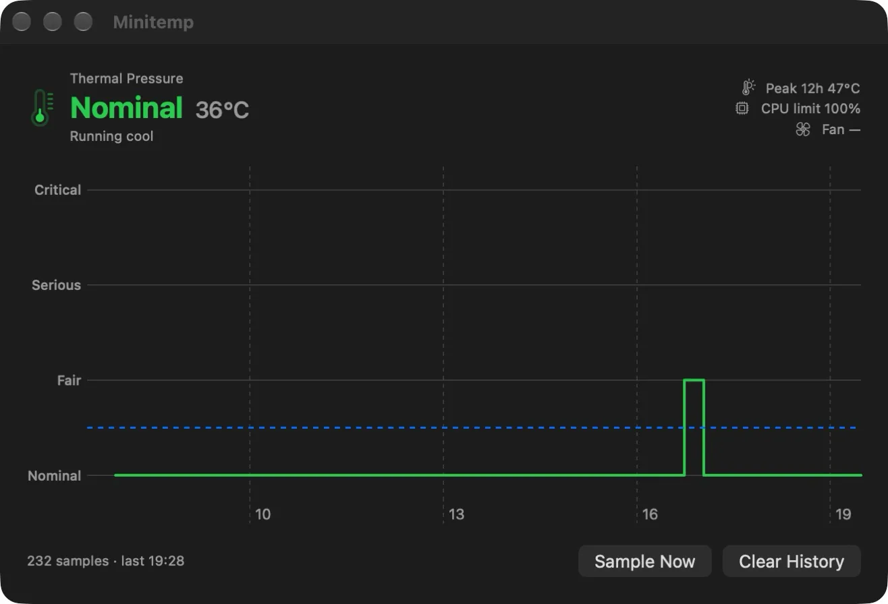
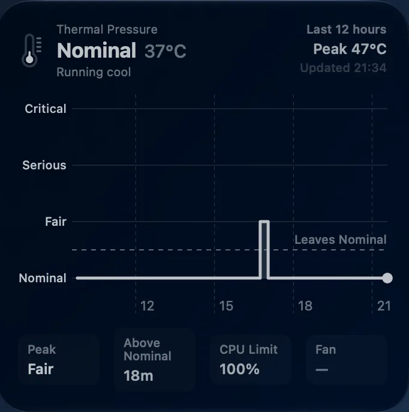

October 11, 2026
Minitemp, a thermal widget for the Mac mini
A desktop widget that records thermal pressure, chip temperature, the CPU speed limit, and the last twelve hours of those parameters.
Minitemp is a desktop widget that records thermal pressure, chip temperature, how much processor speed the system is holding back, and the last twelve hours of those parameters.

What it shows
The medium widget shows the level in words — Nominal, Fair, Serious, Critical — the chip temperature, the CPU speed limit, and twelve hours of history as a sparkline with the peak reading of that window.

The large widget shows the same history as a full chart, with a dashed rule at the Nominal threshold, and four figures: the worst level reached, time spent above Nominal, the CPU speed limit, and the fan.

Both are drawn in the desktop's tinted style, so the colour the level carries in the app window — green for Nominal, red for Critical — is not there. The wallpaper shows through instead.
Where the numbers come from
Minitemp runs without root, without a kernel extension, and without touching the System Management Controller.
The base reading is ProcessInfo.thermalState: available to any
app, no entitlement required, and the same four-level signal macOS acts on.
Two readings are added to it. The CPU speed limit comes from
pmset -g therm, which needs no root on Apple Silicon. The chip
temperature comes from the IOKit HID sensor services — undocumented, but
readable without privileges.
The temperature can be missing; the widget omits it rather than substituting a value. The CPU limit shows 100% when there is nothing to report.
What it does not know
The fan. The widget and the window both reserve a place for it and both show a dash: nothing reads it yet.
Under the hood
SwiftUI and WidgetKit, Swift Charts for both charts, 1,326 lines, macOS 27. The app and the widget are separate processes, so the history lives in an App Group both can reach: twelve hours retained, older samples dropped.
The two write at different rates. The app samples every minute while it is open. The widget samples on each refresh, every fifteen minutes, open or not. The window above holds 232 samples; twelve full hours at one a minute would hold 720.
Questions, corrections, or just to say it worked for you — write to me at commonerdev [at] gmail.com.
11 de octubre de 2026
Minitemp, un widget térmico para el Mac mini
Un widget de escritorio que registra la presión térmica, la temperatura del chip, el límite de velocidad de la CPU, y las últimas doce horas de estos parámetros.
Minitemp es un widget de escritorio que registra la presión térmica, la temperatura del chip, cuánta velocidad del procesador retiene el sistema, y el histórico con las últimas doce horas de estos parámetros.
Qué muestra
El widget mediano muestra el nivel en palabras —Nominal, Fair, Serious, Critical—, la temperatura del chip, el límite de velocidad de la CPU, y doce horas de histórico en una línea resumida con la lectura máxima de esa ventana.
El grande muestra ese mismo histórico en una gráfica completa, con una línea discontinua en el umbral de Nominal, y cuatro cifras: el peor nivel alcanzado, el tiempo por encima de Nominal, el límite de velocidad de la CPU, y el ventilador.
Los dos se dibujan con el tintado del escritorio, así que el color que lleva el nivel en la ventana de la app —verde en Nominal, rojo en Critical— no aparece. Lo que se ve detrás es el fondo de escritorio.
De dónde salen los números
Minitemp funciona sin root, sin extensión de kernel y sin tocar el System Management Controller.
La lectura base es ProcessInfo.thermalState: accesible para
cualquier app, sin entitlement, y es la misma señal de cuatro
niveles sobre la que actúa macOS. A eso se le añaden dos lecturas. El límite
de velocidad de la CPU sale de pmset -g therm, que no necesita
root en Apple Silicon. La temperatura del chip sale de los servicios de
sensores HID de IOKit: no documentados, pero legibles sin privilegios.
La temperatura puede faltar; el widget la omite en lugar de sustituirla por un valor. El límite de la CPU muestra 100 % cuando no hay nada que informar.
Qué no sabe
El ventilador. El widget y la ventana le reservan un sitio y los dos muestran un guion: todavía no hay nada que lo lea.
Por dentro
SwiftUI y WidgetKit, Swift Charts para las dos gráficas, 1.326 líneas, macOS 27. La app y el widget son procesos distintos, así que el histórico vive en un App Group al que llegan los dos: doce horas retenidas, las muestras más antiguas se descartan.
Los dos escriben a ritmos distintos. La app toma una muestra por minuto mientras está abierta. El widget toma una en cada actualización, cada quince minutos, esté abierta o no. La ventana de arriba tiene 232 muestras; doce horas completas a una por minuto serían 720.
Preguntas, correcciones, o solo para contarme que te funcionó: escríbeme a commonerdev [at] gmail.com.